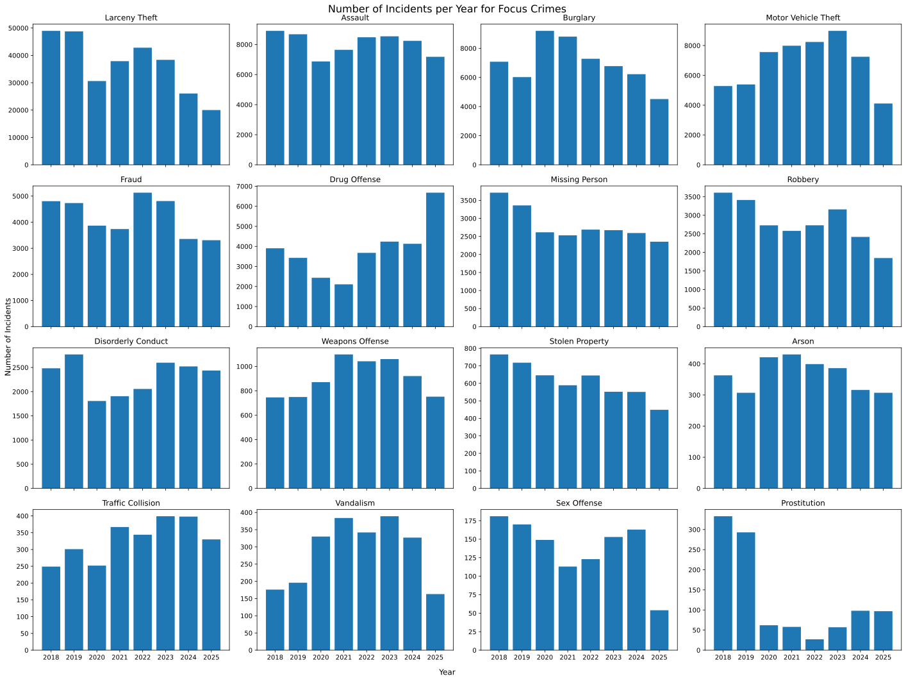
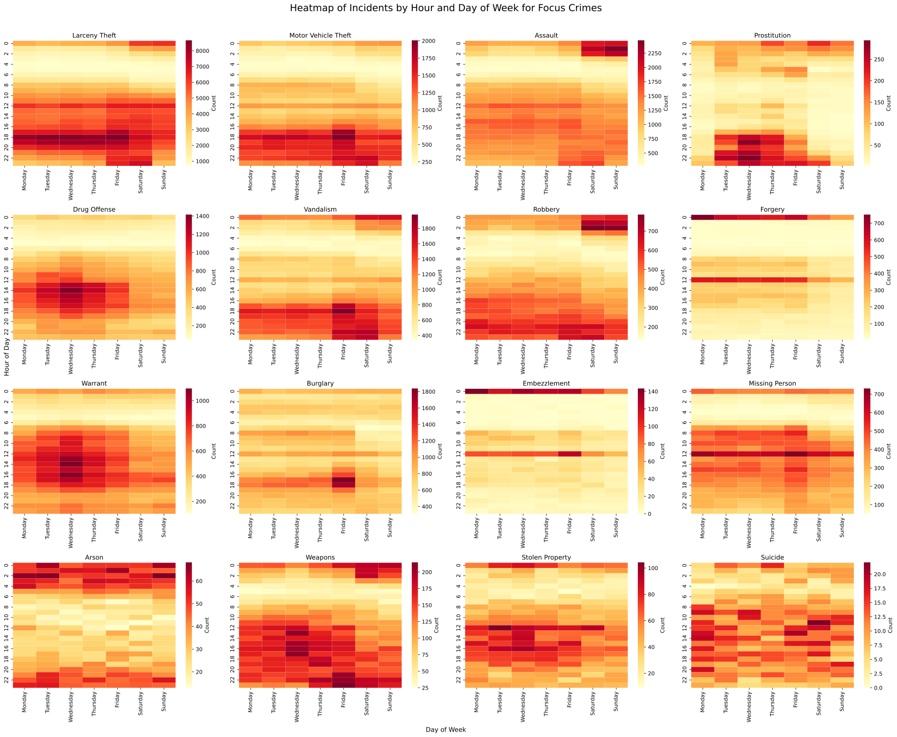
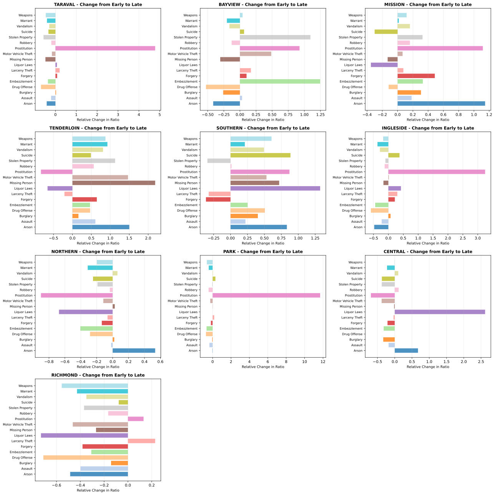

Understanding crime patterns through interactive data analysis (2020-2025)
San Francisco, one of the most vibrant and dynamic cities in the United States, has experienced significant changes in crime patterns over the past five years (2020-2025). This data visualization project explores these patterns through interactive visualizations and statistical analysis, revealing insights into when, where, and what types of crimes occur most frequently.
The visualizations below are based on comprehensive crime incident data, broken down by category, time of day, month, and geographic location. By examining these patterns, we can better understand urban safety trends and the factors that influence them.
Understanding temporal trends is crucial for identifying patterns and potential causal factors. The following visualizations show how crime has evolved across different time periods:
This visualization shows the overall trajectory of crime from 2020 to 2025. Notice how different crime categories have changed over time—some have increased, while others have decreased.

Crime doesn't occur uniformly throughout the day. This chart reveals which hours of the day experience higher crime rates, helping identify peak crime periods and informing public safety strategies.

Not all crime categories are changing at the same rate. This visualization shows which crimes are increasing or decreasing the most relative to their baseline, highlighting emerging and declining crime trends.

Crime incidents follow distinct patterns throughout the day. Some crimes are more prevalent during night hours (robbery, drug offenses), while others occur primarily during business hours (theft, fraud). The interactive visualization below allows you to explore these patterns by hovering over the bars to see specific data for each crime category and hour.
Click on legend items to show/hide specific crime categories. Hover over bars to see exact numbers.
Geographic analysis reveals that crime is not uniformly distributed across San Francisco. Certain neighborhoods consistently experience higher crime rates, while others remain relatively safer. The interactive heatmap below shows the geographic distribution of prostitution-related incidents over time (2020-2025), with a monthly view that allows you to see how incidents cluster in different neighborhoods.
This advanced visualization uses Leaflet's time dimension feature to show how crime incidents cluster spatially over a 5-month period. Use the time controls at the bottom to explore different months and observe how hotspots shift.
Based on the comprehensive data visualizations presented above, several key insights emerge about crime patterns in San Francisco:
Crime is not random—it follows predictable daily and seasonal patterns. Late-night hours (10 PM - 3 AM) consistently show the highest crime rates, while early mornings (3 AM - 7 AM) show the lowest. This suggests opportunities for targeted law enforcement strategies.
Different crimes peak at different times. Violent crimes like robbery and assault concentrate in late evening and night hours, while property crimes like theft and burglary have broader temporal distributions. This reflects both opportunity (darkness) and victim availability patterns.
The heatmap visualization reveals that crime incidents are not randomly distributed. They cluster in specific neighborhoods, suggesting factors like social conditions, commercial activity, and police presence influence crime location patterns.
Year-over-year analysis shows that while some crime categories are increasing, others are decreasing. These trends likely reflect population changes, economic conditions, and policy interventions.
Data Source: San Francisco Police Department (SFPD) Crime Incident Reports
Time Period: 2020-2025
Data Volume: Comprehensive incident-level data including incident type, date, time, and geographic coordinates
All visualizations are responsive and work best in modern web browsers. For best performance, ensure JavaScript is enabled.